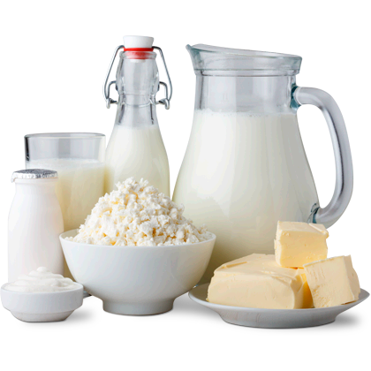
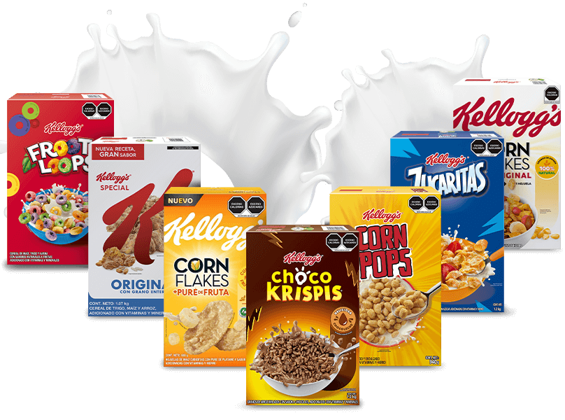
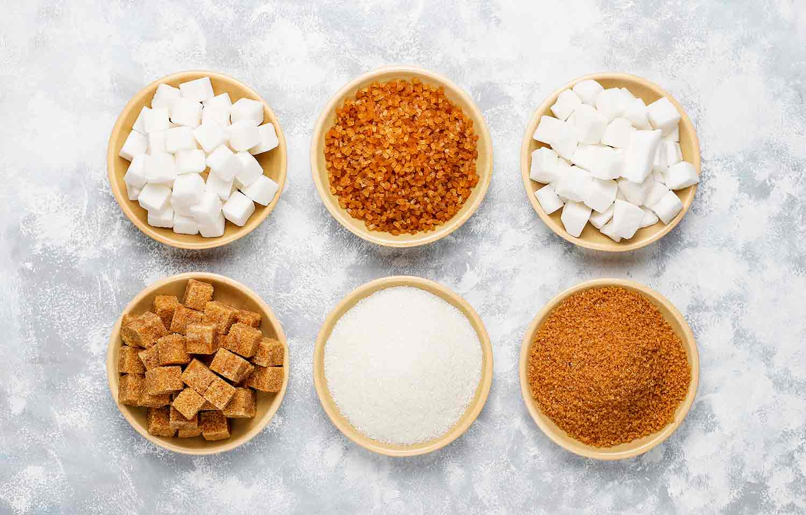
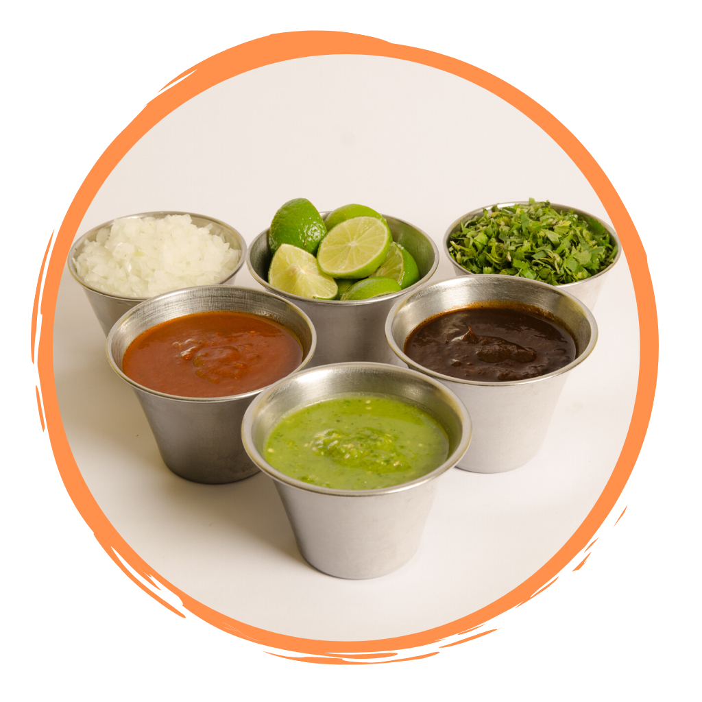
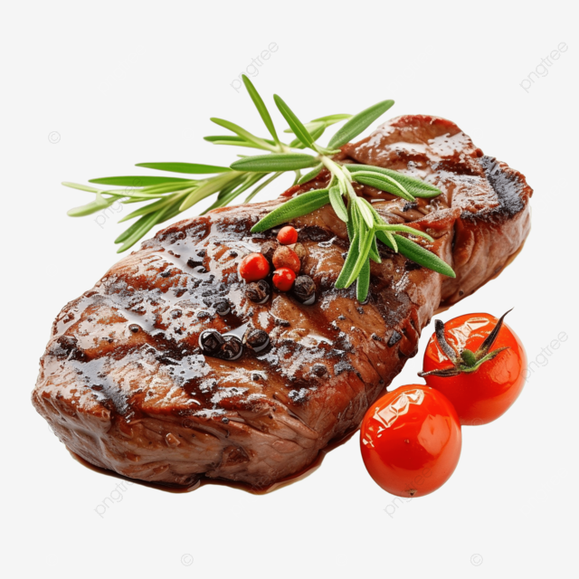

Bienvenido a EcomarketğŸ‹ğŸ 🥫🫒
Tu tienda de confianza especializada en productos de alta calidad, saludables🋠y sosteniblesğŸƒ. En EcoMarket nos enfocamos en ofrecerte una amplia variedad de alimentos frescos, lácteos🐄, bebidas, productos de panaderÃa,🥖 carnes🍖, conservas, y mucho más. Somos seleccionados cuidadosamente para garantizar el bienestar de tu familia y del medio ambiente.🍃💚
Lácteos🐄

PanaderÃa🥖
Bebidas🥛

Dulces🍦
Cereales🥧

Pasta🍜

Azúcares🍬

Salsas🫙

Carnes🍖

Conservas🥫

Hogar🏠
Nuestra Visión💛
Ser el supermercado lÃder en la comercialización de productos colombianos💛💙❤️ reconocido por nuestra contribución al crecimiento de la economÃa local y por ser un referente en el Mercado del consumo responsable y sostenible💚💰 también aspiramos a expandir nuestra presencia a nivel nacional, fortaleciendo las comunidades locales y consolidando una red de distribución que conecte a los productores colombianos con los consumidores de todo el paÃs.🏠 🚛
Nuestra Misión💚
En EcoMarket💛💙❤️, nuestra misión es ofrecer productos 100% colombianos de la más alta calidad para nuestros clientes😊 queriendo brindar una experiencia de compra única donde nos comprometemos a promover el consumo local Colombiano💰🏠 apoyando a los productores y empresas de nuestra Nación, al mismo tiempo que ofrecemos precios accesibles y un servicio excepcional que prioriza el ahorro y el bienestar de las familias🏠 â¤ï¸ğŸ˜Š